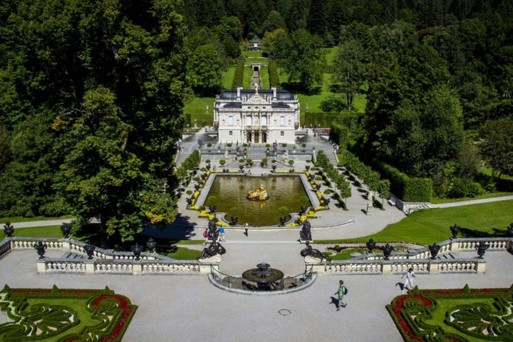
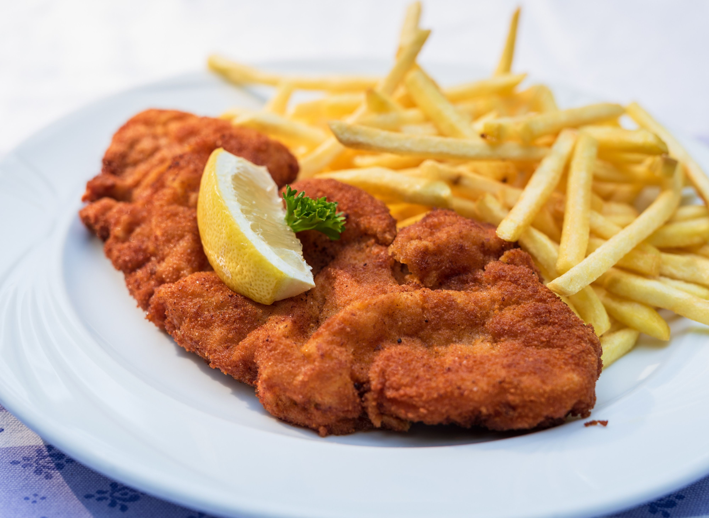
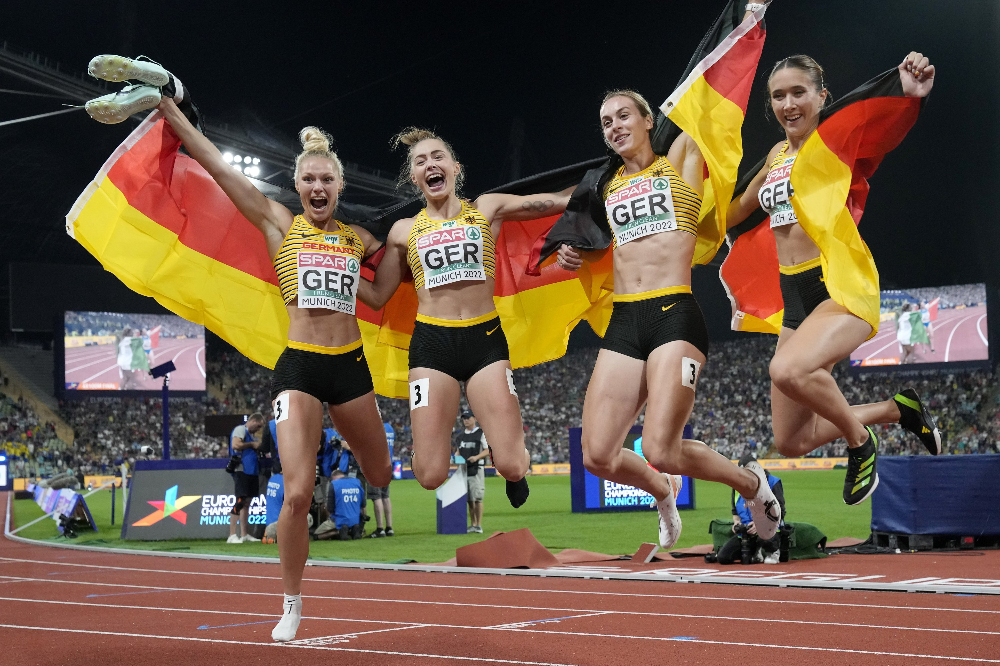

Home
|
| Home |
Sports |
Famous |
Lenguge |
touristic place |
gastronomy |
Form |
|
Germany is a country located in the center of Europe and is well known for its rich history, culture, and natural landscapes...
The official language of Germany is German...
German cuisine is traditional and hearty...
In the world of stories and fairy tales, Germany is especially famous for the Brothers Grimm...
|
 |
|
| Places: Some famous places are Berlin, the Berlin Wall, Neuschwanstein Castle, the Brandenburg Gate, and the Black Forest. |
Language: The official language is German. English is widely spoken, and there are also regional languages such as Turkish and Polish. |
 |
 |
| Gastronomy: German cuisine is hearty and traditional. Typical foods include sausages, sauerkraut, pretzels, pork knuckle, and desserts like strudel. Germany is also famous for its beer. |
Sports: The most popular sport is football (soccer). Germany has one of the best leagues in the world, the Bundesliga, and has won several World Cups. |

|
|
Important people: Albert Einstein, Johann Wolfgang von Goethe, Ludwig van Beethoven, and Angela Merkel.
|
| |
| |
| |
| |
| |